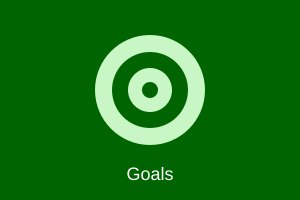

Technical Goals

Here are three technical skills I would like to learn, along with the
start and end dates for when I plan to work on learning each one.
-
Oracle Certified Professional: Java SE 17 Developer (1Z0-829)
Retaking this exam after missing the passing score by 2% on my first attempt.
Start date: July 2026 – End date: September 2026
-
AWS Certified Solutions Architect – Associate (SAA-C03)
Building on my Oracle Cloud experience to become multi-cloud proficient.
Start date: September 2026 – End date: December 2026
-
Certified Kubernetes Administrator (CKA)
Mastering container orchestration for cloud-native, distributed systems.
Start date: January 2027 – End date: April 2027
Back to Home